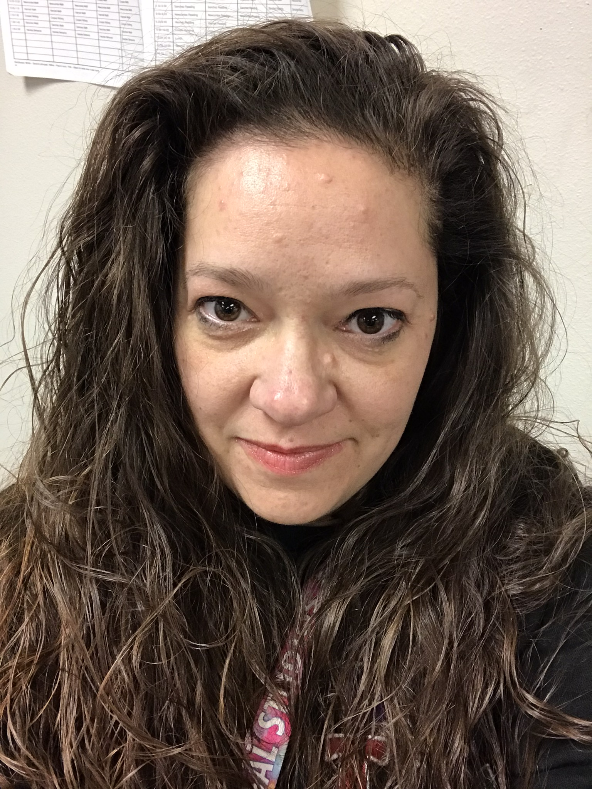

I currently live in Las Vegas, Nevada but I am from a small town in Wyoming. I recieved my Bachelors of Business Administration in 2006 from Colorado Technical University Online which I used in different accouting positions. I then went on to purse a Master’s Degree in Special Education through Grand Canyon University which I gratuated in 2015. After finishing my Special Education Master’s I pursued a Master’s in Business Administration with an emphasis in Accounting and Finance which I gratued with in 2018. From there I wanted to purse a Master’s Degree through University of Florida which I am currently enrolled in and plan to graduate in Summer 2020. I enjoy making things and learned to knitt, needle point and sowing from both my mother and watching online you tube videos. I enjoy spending time with my family and learning new things. I am always enrolled or something or pursing more education to learn and grow as an individual. I like to make crafts and have many completed. This was especially fun to do on a cold winter where you can curl up ina blanket and not go anywhere. In Las Vegas, I do not necessailry need to curl up but I do enjoy making new things and trying new patterns. I eventually would like to offer services that are custimized to the indivdiual so they can order specific patterns or colors based on their likes and preferences. I currently have a lot of inventory and hope if you have questions or concerns you will reach out to me.